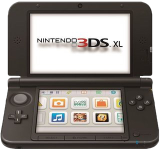

You must follow these steps exactly.
Only proceed with this guide if your system looks like either of the following pictures.
Guide
- Copy all the files to the SD Card.
- Backup your files before proceeding.
- Open the music app and run Soundhax for the Old 3DS (even if you have a 2DS).
- It will now downgrade your system. Be patient, it can take up to 10 minutes.
- Run Safehax and your system will boot into custom firmware.